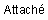

まったくどうでもいいことなんですが、最近まで作者はあのカバンのことを、「アタッシュケース」と呼んでいました（^^; 作者以外にも、けっこう勘違いしている方は多いのではないでしょうか？
たしかに辞書には載っていませんし、このソフトを開発するにあたり、ネーミングをつける段階で初めて知りました。「アタッシェ」が正しい。
そもそも「アタッシェ」とはフランス語のようでして、岩波書店の広辞苑によれば、

−−大使館・公使館に派遣される専門職員。古くは特に、大使館・公使館付の武官。
だ、そうです。
つまり外交官などが持つ書類カバンのことを指して「アタッシェケース」となったようですね。
ちなみにインターネットで検索すると、「アタッシュケース」と誤記したアタッシェケース販売サイトがいくつか見つかりました（笑）。
最近、ユーザーの方から、「某ドリンク剤のCMの曲で“♪アタッシュケースは勇気の印〜”などという歌詞があって、それで勘違いしてました」というメールをもらいました。そういえば作者もこれが原因で勘違いしていたのかもしれません（^^;）。
Created with the Personal Edition of HelpNDoc: Easily create EBooks